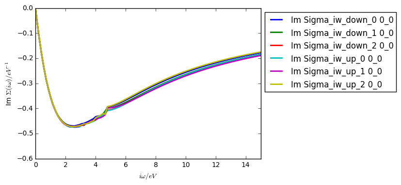

This example is almost identical to the Wien2k-TRIQS SrVO3 example. On the example of SrVO3 we will discuss now how to set up a full working calculation using Elk, including the initialization of the :ref:`CTHYB solver <https://triqs.github.io/cthyb/latest>`_. Some additional parameter are introduced to make the calculation more efficient. This is a more advanced example, which is also suited for parallel execution.
For the convenience of the user, we provide also a full python script (dft_dmft_cthyb_elk.py). The user has to adapt it to their own needs. How to execute your script is described here.
For more details we refer to the documentation, now we will discuss the conversion for Elk.
A brief note before discussing the example. This interface works for any type of ground state Elk calculation using the interface calls described in this example (i.e. the interface is universal). If the user wishes to perform a spin-polarized calculation in DMFT alone (non magnetic DFT inputs), they have to lift the up / down spin symmetry manually (not shown here).
Elk to TRIQS¶
First, we perform a DFT calculation, using the Elk package. As main input file we have to provide the so-called elk.in elk.in. We use the following:
!Calculates the V t2g Wannier projectors, Wannier charge and Wannier DOS of SrVO3
!Example by Alyn D. N. James
tasks
0
805
ngridk
12 12 12
sppath
'../../../species/'
rgkmax
7.0
avec
7.260500000 0.000000000 0.000000000
0.000000000 7.260500000 0.000000000
0.000000000 0.000000000 7.260500000
atoms
3 : nspecies
'Sr.in' : spfname
1 : natoms; atposl, bfcmt below
0.50000000 0.50000000 0.50000000 0.00000000 0.00000000 0.00000000
'V.in' : spfname
1 : natoms; atposl, bfcmt below
0.00000000 0.00000000 0.00000000 0.00000000 0.00000000 0.00000000
'O.in' : spfname
3 : natoms; atposl, bfcmt below
0.50000000 0.00000000 0.00000000 0.00000000 0.00000000 0.00000000
0.00000000 0.50000000 0.00000000 0.00000000 0.00000000 0.00000000
0.00000000 0.00000000 0.50000000 0.00000000 0.00000000 0.00000000
wanproj !projector flag
1 !number of projectors - next 3 lines are repeated for each projector
2 2 3 !species, l, reduced max lm (rlmmax) value
7 8 9 !the lm quanties which will be projected (vector length eq. rlmmax)
-0.055 0.07 ![-1.5, 1.9] eV t2g correlated energy window
This elk.in will generate the ground state (task 0) and the Wannier projectors (task 805) in a small energy window for the \(V\) \(t_{2g}\) orbitals. The elk executable is run in the directory including the elk.in file.
A simple python script that initializes the converter is:
from triqs_dft_tools.converters.elk import *
Converter = elkConverter(filename = "SrVO3")
After initializing the converter, we can now convert the input text files into an hdf5 archive by:
Converter.convert_dft_input()
This reads all necessary data from the Elk output, and stores the converted input for the DMFT calculation in the file SrVO3.h5.
The DMFT calculation¶
The DMFT script itself is, except very few details, independent of the DFT package that was used to calculate the local orbitals. As soon as one has converted everything to the hdf5 format, the following procedure is practically the same.
Loading modules¶
First, we load the necessary modules:
from triqs_dft_tools.sumk_dft import *
from triqs.gf import *
from h5 import HDFArchive
from triqs.operators.util import *
from triqs_cthyb import *
import triqs.utility.mpi as mpi
The last two lines load the modules for the construction of the :ref:`CTHYB solver <https://triqs.github.io/cthyb/latest/>`_.
Initializing SumkDFT¶
We define some parameters, which should be self-explanatory:
dft_filename = 'SrVO3' # filename
U = 4.0 # interaction parameters
J = 0.65
beta = 40 # inverse temperature
loops = 15 # number of DMFT loops
mix = 0.8 # mixing factor of Sigma after solution of the AIM
dc_type = 1 # DC type: 0 FLL, 1 Held, 2 AMF
use_blocks = True # use bloc structure from DFT input
prec_mu = 0.0001 # precision of chemical potential
And next, we can initialize the SumkDFT class:
SK = SumkDFT(hdf_file=dft_filename+'.h5',use_dft_blocks=use_blocks)
Initializing the solver¶
We also have to specify the :ref:`CTHYB solver <https://triqs.github.io/cthyb/latest>`_ related settings. We assume that the DMFT script for SrVO3 is executed on 16 cores. A sufficient set of parameters for a first guess is:
p = {}
# solver
p["length_cycle"] = 200
p["n_warmup_cycles"] = 100000
p["n_cycles"] = 1000000
# tail fit
p["perform_tail_fit"] = True
p["fit_max_moment"] = 4
p["fit_min_n"] = 30
p["fit_max_n"] = 60
Here we use a tail fit to deal with numerical noise of higher Matsubara frequencies. For other options and more details on the solver parameters, we refer to the :ref:`CTHYB solver <https://triqs.github.io/cthyb/latest/reference/constr_parameters.html>`_ documentation. It is important to note that the solver parameters have to be adjusted for each material individually. A guide on how to set the tail fit parameters is given below.
The next step is to initialize the solver class. It consist of two parts:
- Calculating the multi-band interaction matrix, and constructing the interaction Hamiltonian.
- Initializing the solver class itself.
The first step is done using methods of the TRIQS library:
n_orb = SK.corr_shells[0]['dim']
l = SK.corr_shells[0]['l']
spin_names = ["up","down"]
orb_names = [i for i in range(n_orb)]
# Use GF structure determined by DFT blocks:
gf_struct = [(block, indices) for block, indices in SK.gf_struct_solver[0].iteritems()]
# Construct U matrix for density-density calculations:
Umat, Upmat = U_matrix_kanamori(n_orb=n_orb, U_int=U, J_hund=J)
We assumed here that we want to use an interaction matrix with Kanamori definitions of \(U\) and \(J\).
Next, we construct the Hamiltonian and the solver:
h_int = h_int_density(spin_names, orb_names, map_operator_structure=SK.sumk_to_solver[0], U=Umat, Uprime=Upmat)
S = Solver(beta=beta, gf_struct=gf_struct)
For simplicity, we take only density-density interactions into account here. Other Hamiltonians with, e.g. with full rotational invariant interactions are:
- h_int_kanamori
- h_int_slater
For other choices of the interaction matrices (e.g Slater representation) or Hamiltonians, we refer to the reference manual of the TRIQS library.
As a last step, we initialize the subgroup in the hdf5 archive to store the results:
if mpi.is_master_node():
with HDFArchive(dft_filename+'.h5') as ar:
if (not ar.is_group('dmft_output')):
ar.create_group('dmft_output')
DMFT cycle¶
Now we can go to the definition of the self-consistency step. It consists again of the basic steps with some additional refinements:
for iteration_number in range(1,loops+1):
if mpi.is_master_node(): print "Iteration = ", iteration_number
SK.symm_deg_gf(S.Sigma_iw,ish=0) # symmetrizing Sigma
SK.set_Sigma([ S.Sigma_iw ]) # put Sigma into the SumK class
chemical_potential = SK.calc_mu( precision = prec_mu ) # find the chemical potential for given density
S.G_iw << SK.extract_G_loc()[0] # calc the local Green function
mpi.report("Total charge of Gloc : %.6f"%S.G_iw.total_density())
# In the first loop, init the DC term and the real part of Sigma:
if (iteration_number==1):
dm = S.G_iw.density()
SK.calc_dc(dm, U_interact = U, J_hund = J, orb = 0, use_dc_formula = dc_type)
S.Sigma_iw << SK.dc_imp[0]['up'][0,0]
# Calculate new G0_iw to input into the solver:
S.G0_iw << S.Sigma_iw + inverse(S.G_iw)
S.G0_iw << inverse(S.G0_iw)
# Solve the impurity problem:
S.solve(h_int=h_int, **p)
# Solved. Now do post-solution stuff:
mpi.report("Total charge of impurity problem : %.6f"%S.G_iw.total_density())
# Now mix Sigma and G with factor mix, if wanted:
if (iteration_number>1):
if mpi.is_master_node():
with HDFArchive(dft_filename+'.h5','r') as ar:
mpi.report("Mixing Sigma and G with factor %s"%mix)
S.Sigma_iw << mix * S.Sigma_iw + (1.0-mix) * ar['dmft_output']['Sigma_iw']
S.G_iw << mix * S.G_iw + (1.0-mix) * ar['dmft_output']['G_iw']
S.G_iw << mpi.bcast(S.G_iw)
S.Sigma_iw << mpi.bcast(S.Sigma_iw)
# Write the final Sigma and G to the hdf5 archive:
if mpi.is_master_node():
with HDFArchive(dft_filename+'.h5') as ar:
ar['dmft_output']['iterations'] = iteration_number
ar['dmft_output']['G_0'] = S.G0_iw
ar['dmft_output']['G_tau'] = S.G_tau
ar['dmft_output']['G_iw'] = S.G_iw
ar['dmft_output']['Sigma_iw'] = S.Sigma_iw
# Set the new double counting:
dm = S.G_iw.density() # compute the density matrix of the impurity problem
SK.calc_dc(dm, U_interact = U, J_hund = J, orb = 0, use_dc_formula = dc_type)
# Save stuff into the user_data group of hdf5 archive in case of rerun:
SK.save(['chemical_potential','dc_imp','dc_energ'])
TRIQS to Elk (Fully Charge Self-Consistent DFT+DMFT)¶
To output the DMATDMFT.OUT file for a fully charge self-consistent calculation, add the following lines to the end of the DMFT python script:
#output the density matrix for Elk interface
dN, d = SK.calc_density_correction()
#correlation energy via the Migdal formula
correnerg = 0.5 * (S.G_iw * S.Sigma_iw).total_density()
#subtract the double counting energy
correnerg -= SK.dc_energ[0]
#convert to Hartree
correnerg = correnerg/SK.energy_unit
#save the correction to energy
if (mpi.is_master_node()):
f=open('DMATDMFT.OUT','a')
f.write("%.16f\n"%correnerg)
f.close()
To update the electron density and solve the Kohn-Sham equations once, run task 808 in elk.in. Automating this cycle can be done by running the shell script (elk_fcsc.sh) and having an elk_master.in file which replaces the tasks in elk.in for each new task in the FCSC DFT+DMFT cycle (see elk_master.in. Assuming that the ground state has been calculated, this shell script executes the following:
- generate the projectors (task 805)
- execute the DMFT cycle(s)
- update the electron density
- -> (1) …
The user just needs to specify the maximum number of FCSC cycles, as well as the number of OpenMP threads for Elk (OMP_NUM_THREADS) and the number of MPI ranks in the bash script.
This is all we need for the one-shot or FCSC DFT+DMFT calculation. All results of this calculation will be stored in a separate subgroup in the hdf5 file, called dmft_output. Note that the script performs 15 DMFT cycles, but does not check for convergence. It would be possible to build in convergence criteria. A simple check for convergence can be also done if you store multiple quantities of each iteration and analyse the convergence manually. In general, it is advisable to start with less good statistics (fewer measurements), and increase the number of measurements close to convergence (e.g. after a few initial iterations). This helps to keep computational costs low during the first iterations.
Using the Kanamori Hamiltonian and the parameters above (but on 16 cores), your self energy after the first iteration should look something like:
{kind=link}
Tail fit parameters¶
A good way to identify suitable tail fit parameters is by “human inspection”. Therefore disabled the tail fitting first:
p["perform_tail_fit"] = False
and perform only one DMFT iteration. The resulting self energy can be tail fitted by hand:
Sigma_iw_fit = S.Sigma_iw.copy()
Sigma_iw_fit << tail_fit(S.Sigma_iw, fit_max_moment = 4, fit_min_n = 40, fit_max_n = 160)[0]
Plot the self energy and adjust the tail fit parameters such that you obtain a proper fit. The fit_tail function is part of the TRIQS library.
For a self energy which is going to zero for \(i\omega \rightarrow 0\) our suggestion is to start the tail fit (fit_min_n) at a Matsubara frequency considerable above the minimum of the self energy and to stop (fit_max_n) before the noise fully takes over. If it is difficult to find a reasonable fit in this region you should increase your statistics (number of measurements). Keep in mind that fit_min_n and fit_max_n also depend on \(\beta\).